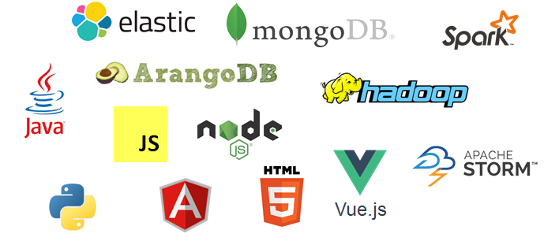

Big Data Viz (and much more!) with
Apache Zeppelin
Mais té ki (moi, moche, méchant) ?
Architecte logiciel / Développeur

@_bruno_b_
 https://github.com/bbonnin
https://github.com/bbonnin
Apache Zeppelin, mais qu'est-ce ?
citation ?
ce qui est écrit sur le blog de MapR ?

Remontons aux origines...
NFLabs
Et aujourd'hui : Apache Zeppelin Top Level Project depuis le 25 mai 2016!
Démo #1 : où l'on jète un oeil
1ère démo montrant les aspects UI : notebooks, paragraphes, interpreteur, lancement, mode rapport, ...
Composants
Un peu d'architecture
le serveur, les interpréteurs, le client
Dynamiquement, ça se passe ainsi
cheminement du "code" du client vers l'interpréteur et retour
Démo #2 : où l'on fabrique son premier rapport avec graphiques
Exemple: NASA
Les composants "Data Viz"
Un focus sur la data viz, même si ce n'est qu'un élément de Zeppelin
Plusieurs slides
Démo #3 : où l'on utilise une lib externe pour afficher une map
Exemple: TripAdvisor
Etendre Zeppelin: Faire un interpréteur
exemple de code avec les parties importantes
compile / package / déploiement et hop !
Exemple : github de l'interpréteur ArangoDB (AQL)
Demo du nouvel interpreteur
Etendre Zeppelin: Hélium
A voir ...
Q/A
Mettre plein de copie d'écran de rapport avec des images de charts (bank, nasa, tripadvisor)
Merci !
@_bruno_b
github 'web2day2016' avec les slides, les notebooks